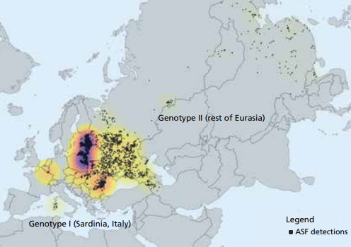
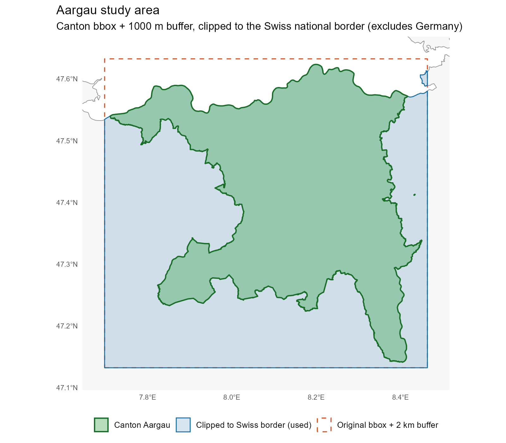
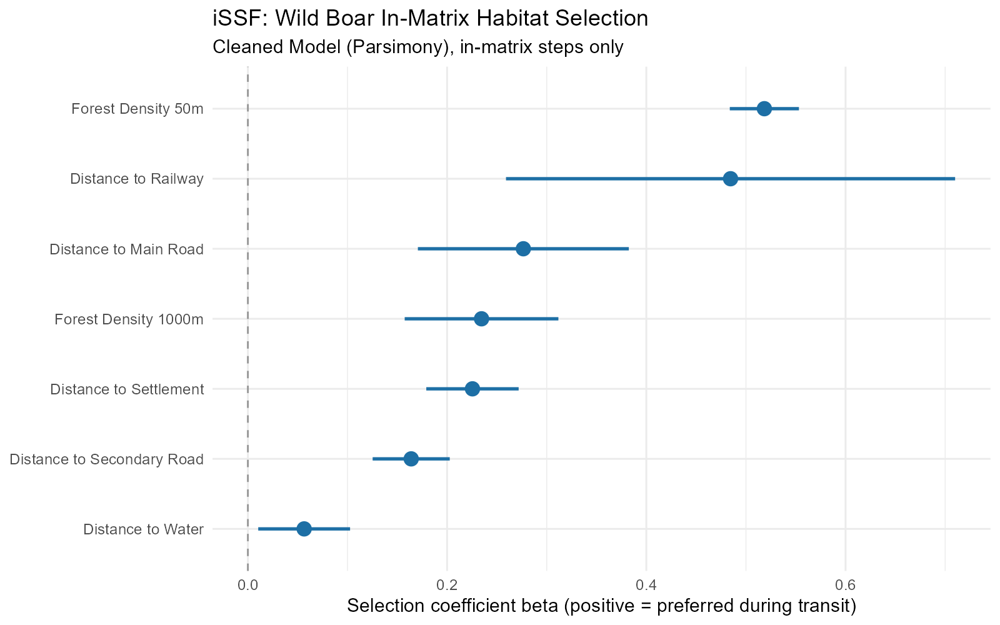
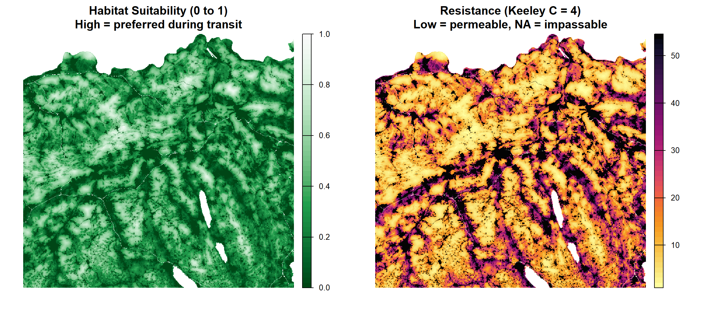
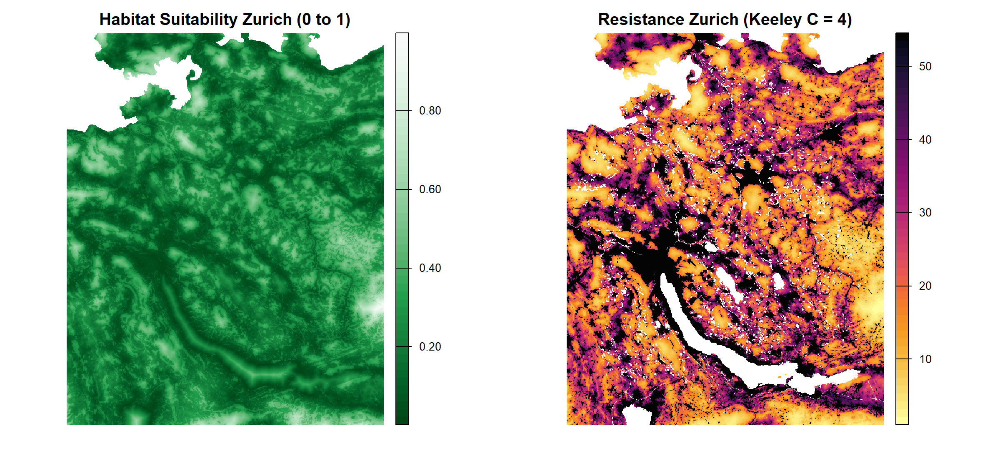
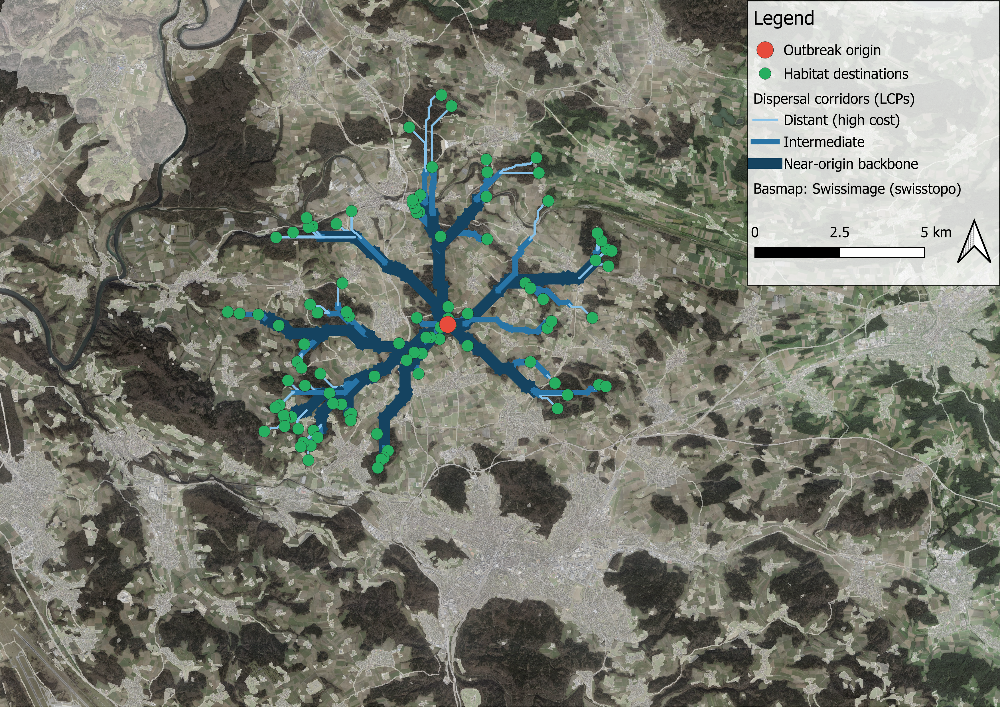
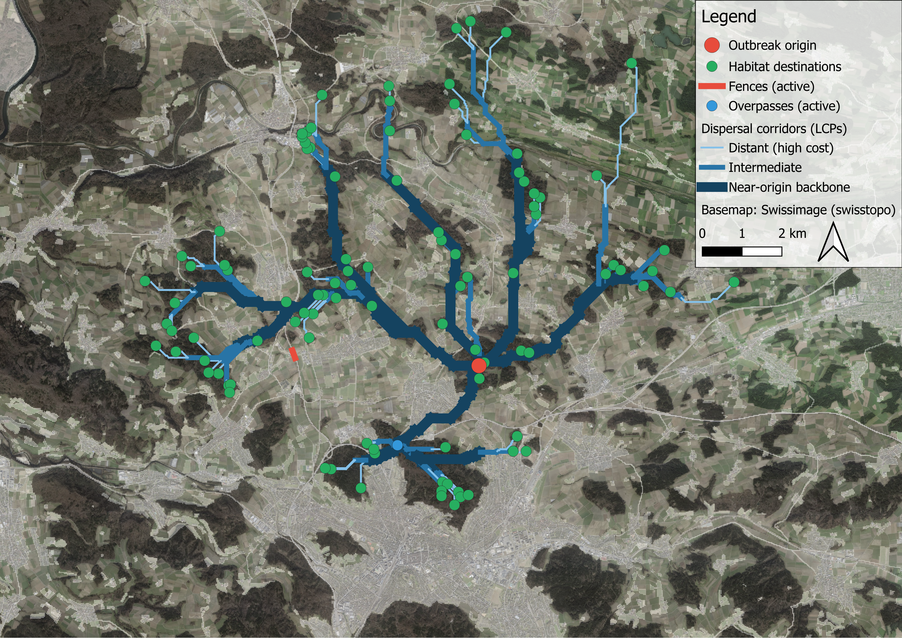
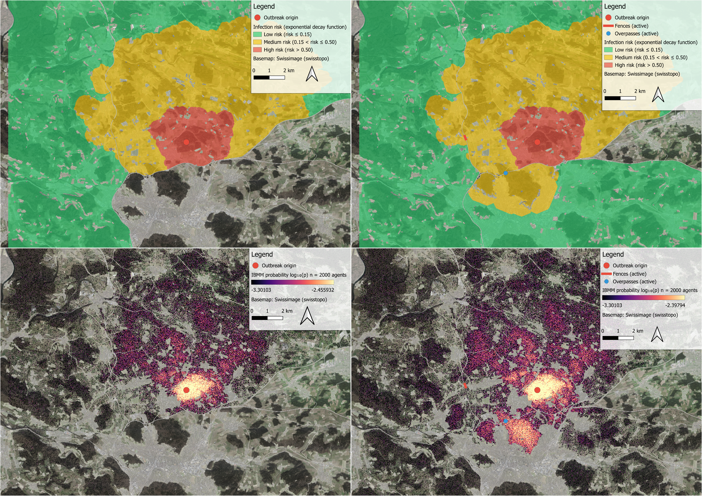

An Interactive Planning Tool for Wild Boar Connectivity and African Swine Fever Prevention
Bachelor Thesis · Applied Digital Life Science · ZHAW
2026-07-01
The problem
African Swine Fever
- Case fatality: 90–95 % · no vaccine
- Stable in carcasses for months
- Advancing ~1–3 km/month across Europe
- Wild boar = primary reservoir
The dilemma (Hess 1994)
Wildlife corridors can increase disease spread under ASF-like conditions

What is missing
Existing Swiss connectivity models — Fischer (2024), Urbina (2023) — are static.
They answer: where are the corridors?
They cannot answer:
- Which zones need surveillance if ASF is detected here today?
- What changes if we fence this road section?
- Does a new overpass help or redirect the problem?
Research objectives
1 — Species-specific resistance surface
Adapt the connectivity modelling framework from red deer to wild boar using GPS telemetry from Canton Aargau
2 — Interactive QGIS planning tool
Build a plugin that lets wildlife managers simulate ASF spread and test interventions — without programming
Study area
- Calibration: Canton Aargau — GPS telemetry available
- Transfer: Canton Zürich — independent application area
- 25 m resolution · Swiss LV95
- Landscape: Swiss Mittelland — motorways, rail, agriculture interrupting forested ridges

From GPS tracks to resistance surface
GPS telemetry (Aargau, 2014–2017, 15 min interval)
│
▼
Preprocessing ── exclude short deployments, drop steps > 3,000 m
│
▼
Step classification ── in-matrix (7,824) · in-patch (125,285)
│
▼
iSSF fitting ── 7 covariates · 10 random steps each
│
▼
Resistance surface ── R = exp(4 · (1 − S))
│
▼
Transfer to Zürich ── same β · Zürich-local normalisationStep classification
| Rule | Criterion | Steps | Share |
|---|---|---|---|
| 1 | Length > 250 m | 4,759 | 60.8 % |
| 2 | Length > 150 m and |angle| < π/4 | 2,748 | 35.1 % |
| 3 | ≥ 3 consecutive: length > 100 m and |angle| < π/4 | 317 | 4.1 % |
| — | Remaining (in-patch default) | 125,285 | — |
Result: 7,824 in-matrix steps (5.9 %) · 14 individuals
iSSF — 7 covariates retained
14 candidates → 7 retained (all VIF < 1.5)
Kept: forest density 50 m, forest density 1000 m, distance to water, distance to main roads, secondary roads, railways, settlements
Excluded: slope, TRI, edge distance, forest binary, fenced road distance, flowing / lake distance separately
Important
Fenced road exclusion
Initial β = −0.60 → apparent attraction to motorways.
Cause: animals pacing along fenced motorways, not crossing them. This is a data artefact, not true preference. Fenced roads belong in the burn-in, not the regression.
iSSF results

- All 7 coefficients positive
- Positive = preferred during transit = higher resistance
- Forest density 50 m: tightest CI — most reliably estimated
- Railway: strong avoidance, wide CI (sparse in Aargau)
- Movement kernel terms both highly significant
Resistance surface — Aargau

Median resistance: 35.1 · theoretical midpoint: 27.8 · range: 1–54.6 · NoData = absolute barriers
Transfer to Zürich

Aargau β and z-standardisation reused · Zürich-specific normalisation for within-canton contrast · permanent ASF fences burned in as absolute barriers
QGIS Plugin — workflow
- Load resistance raster
- (Optional) upload habitat shapefile
- Draw fences or overpasses on the map
- Click outbreak origin
- Select analyses · press Run
- Styled layers appear in ~3 minutes
No programming required
| Module | Method |
|---|---|
| LCP corridors | Dijkstra traceback |
| Infection risk | Cost-distance kernel |
| Circuitscape | Random walk current |
| BCRW | Von Mises biased walk |
| IBMM | iSSF-based agents |
Demo — Baseline (Winterthur)

Demo — Scenario comparison (virtual fence + overpass)


Fence across principal pinchpoint · new overpass on northern corridor → LCP backbone reroutes, current density redistributes
Risk and contamination — fence scenario


Discussion
What worked
- Coefficients ecologically interpretable: forest cover, infrastructure avoidance
- Resistance surface reproduces expected landscape structure
- Five modules complement each other well
- Interactivity closes the gap to operational management
Key limitations
- No Zürich telemetry → no quantitative validation
- 10-year gap between telemetry (2014–17) and landscape data (2026)
- Keeley C = 4 from red deer, no wild-boar-specific value
- IBMM can step across absolute barriers (endpoint selection artefact)
Conclusions and outlook
Deliverables
- First wild-boar-specific resistance surface for the Swiss Mittelland
- QGIS plugin: 5 analyses · <3 min · no programming required
- Addresses the Hess (1994) trade-off in an operational planning context
The tool is ready for pilot use
Priority next steps
- GPS telemetry from Zürich wild boar — validation
- Population density weighting
- Day / night movement distinction
- Better forest data (lidar / canopy height)
- Cross-border data (German side of Rhine)
BA Final Presentation | Lukas Buchmann | ZHAW